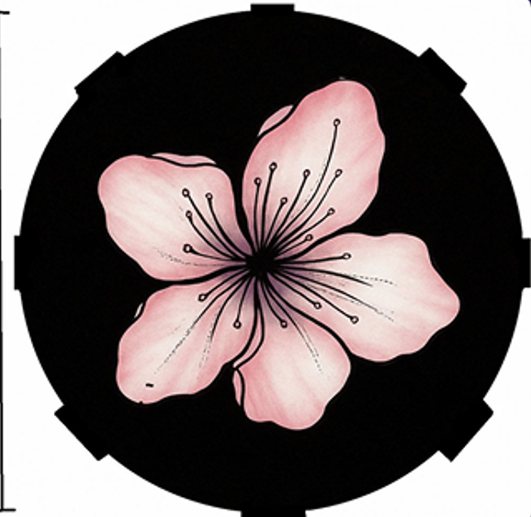
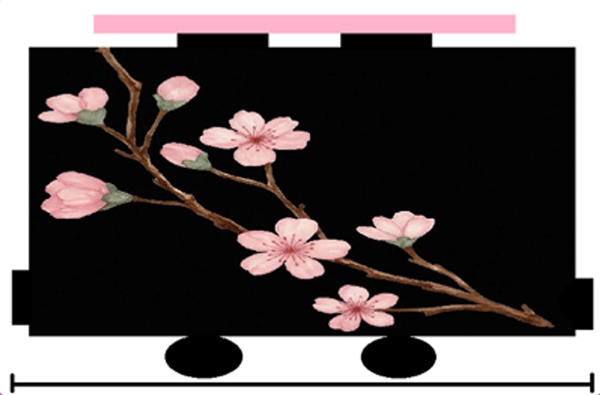
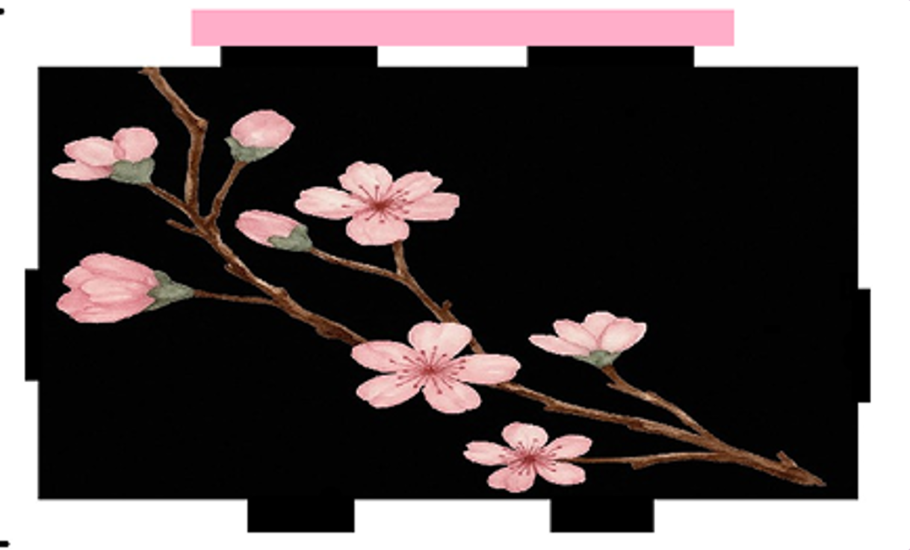
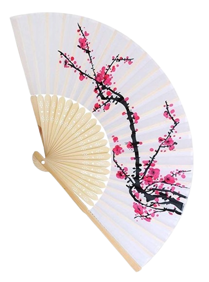

SAKURA KILL
Sakura Kill é um projeto de robótica que une estética e tecnologia. Inspirado na simbologia da flor de cerejeira e na arte cyberpunk japonesa.
O objetivo do projeto é explorar novas possibilidades na interface entre robótica e design com forte identidade visual.

Imagem vista de cima do robô

Imagem vista de lado do robô

Imagem vista de frente do robô

ARMA DO ROBO
Leque com Agulhas – Sakura
Feito para o robô, o Leque do Sakura é uma arma discreta, elegante e funcional.
-
Características técnicas:
-
Estrutura: Hastes de madeira, resistente a impactos moderados.
-
Agulhas: Pontas metálicas de aço integradas às extremidades das hastes, projetadas para perfuração.
-
Sistema de abertura: Motor elétrico compacto embutido na base do leque, alimentado por microbaterias. Permite abertura e fechamento automáticos.
- Controle: Abertura e fechamento podem ser acionados manualmente ou remotamente via sistema interno do robô.